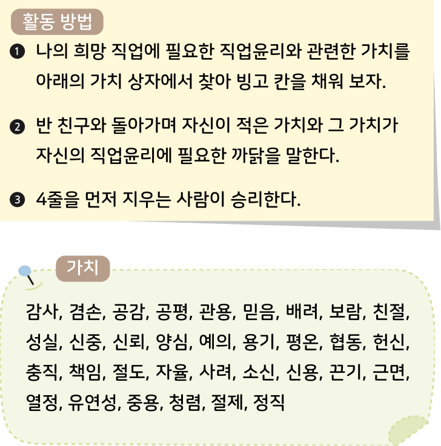

수행 활동직업윤리 빙고 게임
1 내가 희망하는 직업과 그 직업을 선택한 까닭을 이야기해 보자.
수행 활동직업윤리 빙고 게임
2 다음 활동 방법을 읽고 나의 희망 직업에 필요한 직업윤리와 관련한 가치를 빙고 칸에 채워 보자.

| 감사 | 헌신 | 충직 | 소신 |
| 유연성 | 청렴 | 광용 | 배려 |
| 공감 | 근면 | 정직 | 책임 |
| 용기 | 절제 | 믿음 | 신중 |
수행 활동직업윤리 빙고 게임
3 나의 희망 직업에 필요한 직업윤리와 관련한 가치를 바탕으로 실천 강령을 만들어 보자.
예시 판사는 모든 사람에게 신중하고 공평한 판결을 내려야 한다.
스스로 평가하기
평가 점수
-
1
직업과 직업윤리의 의미에 대해 이해하였다.
12345 -
2
자신이 희망하는 직업과 그 까닭을 파악하였다.
12345 -
3
다양한 직업에 필요한 직업윤리 덕목을 제시하였다.
12345 -
4
자신의 희망 직업에 필요한 직업윤리를 실천 강령으로 만들었다.
12345